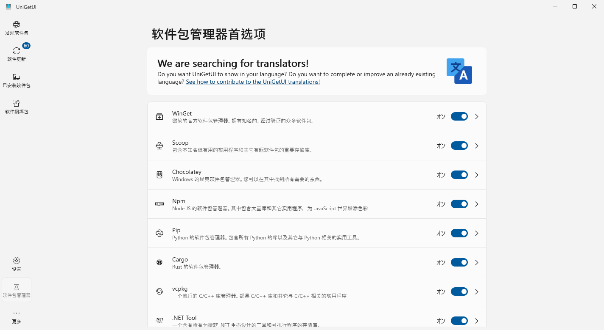

Windows 资源
Table of Contents
1. Windows / Office 激活
打开 Windows Powershell 然后执行：
irm https://get.activated.win | iex
使用 HWID 激活 Windows，使用 Ohook 激活 Office。
2. 下载 Windows/Office
Win10 Enterprise IoT LTSC 2021 is all you need.
- 🉑安全更新到2032年，让微软多修几年Win11。
对比：企业LTSC版支持到2027年，企业物联网LTSC版又多五年支持 - 没有多余应用，等同于精简版；
预安装Edge浏览器和Win32系统应用。 - 与LTSC在二进制水平上完全相同，除了没有 MS Store。
下载MS Store：wsreset -i。 或者，安装winget和scoop管理一切。 - 可手动安装安全更新
Win11 Enterprise IoT LTSC 2024
- 与 Win10 IoT LTSC 很像
- 使用 React Native 重写 UI (???)
- 这个 Intel 12 代以上的大小核调度 是不是非要不可，然后可以考虑这一版
- 否则就等着 IoT LTSC 2027 吧
其他Win10/Win11 家庭版/专业版/教育版/企业版/企业版IoT
- 预安装Edge, Win32系统应用，MS Store，OneDrive, 天气，电影，音乐，Candy Crush，等等
- 特性更新时自动更新应用
- 仅1.5~3年支持
- 强制更新
Office 版本
Microsoft 365 优于 Office 2024，因为它包含只有 365 才提供的以下功能。 - PowerPoint 中的设计器 - Word 中的 Microsoft 编辑器 - Excel 中的最新公式 - 高级字体和图标 - 辅助功能增强 Microsoft 365 会定期接收更新，所有应用程序都会获得新功能和改进。相比之下，Office 2024 仅接收安全更新，没有新增功能。 -- Massgrave
3. Windows 软件管理 in 2025
从 WinXP 时野蛮生长的软件安装， 目前已经产生了安装速度、安全来源与可复现构建等多方面的困扰。 Linux 比 Windows 好就好在有一个包管理器， 而坑也就坑在不同发行版都有自己的包管理器。 好在现在 Windows 的可用包管理器与 Win10 和 Powershell 结合得很好，
- Chocolatey 是Windows 的经典软件包管理器。您可以在其中找到所有需要的东西。
- Scoop 包含不知名但有用的实用程序和其它有趣软件包的重要存储库。
- Winget 是微软的官方软件包管理器。拥有知名的、经过验证的众多软件包。
UniGetUI则是包管理器的 UI 界面，个人感觉等于把包管理器大一统了……

建议 UniGetUI 多用吧。
4. Windows 软件推荐
5. Office 教程
很多 Office 的知识点是面向计算机二级的； 非科班的玩不来电脑，计算机科班的又不考计算机二级。 但是计算级二级水平的 Office 知识对计算机科班而言同样必要， 这样至少不会因为玩不来 Word 排版而选择梭哈 \(\LaTeX\) ， 反过来歧视 Word 怎样地劳心费力，不如 \(\LaTeX\) 一根。
推荐（付费视频）教程：向天歌的PPT/Excel/Word大神上分攻略。
配套电子书教材：PPT之光/Excel之光/Word之光。
我曾拜读过 Oeasy 老师的教程，现在就感觉这玩意还是太老了且缺乏体系， 拿出来个系统是 Windows Vista，Office 2007。 虽然我也曾认为 Office 2003 是 Golden Standard， 可能只是因为与 WinXP 和华军软件园更搭配。
举例如 Word 教程的一些我认为有必要学习的知识点：
- 样式 作为结构化排版的基础
- 尾注 ， 页眉页脚 ， 表格 都是写作论文的细节
- 查找与替换 ，大家都很熟悉正则表达式吧，Word 也有这种东西
- 邮件合并 虽然听上去很没用，但也是计算机二级的考点，还有一些妙用